Next: Coordinate Matrices and Change Up: Vector Spaces Previous: Linear Spans Contents Index
Suppose we have  , a list of
, a list of  vectors
vectors
 .
Furthermore, suppose
.
Furthermore, suppose
 spans a vector space
spans a vector space  .
In one of our problems in the preceding section, we have seen that adding more vectors to
.
In one of our problems in the preceding section, we have seen that adding more vectors to  still allows
us to say that
still allows
us to say that
 spans the vector space
spans the vector space  . In order to be conservative of
our need to write out vectors, it would be nice to have some way of knowing what is the
minimal number of vectors one needs to span a vector space. We can then use this
minimum list to write a linear combination of these vectors which we can use as
a representative of the vector space
. In order to be conservative of
our need to write out vectors, it would be nice to have some way of knowing what is the
minimal number of vectors one needs to span a vector space. We can then use this
minimum list to write a linear combination of these vectors which we can use as
a representative of the vector space  . We are then able to use this representative equation
to prove many properties of
. We are then able to use this representative equation
to prove many properties of  .
.
In order to weed out unnecessary vectors from a list that spans a vector space, we must first have a way of identifying them. We will call these vectors linearly dependent.
The first condition about the scalars, that
 , is just another way of saying that
they all can't be zero. Another way of saying this, for vectors in the reals, would be that if
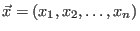
, then
, is just another way of saying that
they all can't be zero. Another way of saying this, for vectors in the reals, would be that if
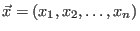
, then
 or
or
 .
.
Any list of vectors 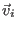 are called linearly independent if they are not linearly dependent. In other words are linearly independent when
 is true only if 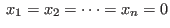
is true only if 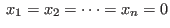
Suppose we have  vectors
vectors  that span a vector space
over
that span a vector space
over
 . Then any vector
. Then any vector  in
may be written as a linear combination of these vectors
in
may be written as a linear combination of these vectors
 for
for Suppose that we could also write
 for
for where not every 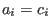 . Subtraction gives us
From this we can deduce that at least one of the
If the linear combination
for is composed of linearly independent vectors
for where not every .
A linearly independent list of vectors from a vector space  which spans
which spans  is an important
idea. It is so important that we give it it's own name. We call it a basis.
is an important
idea. It is so important that we give it it's own name. We call it a basis.
From our previous discussion, we have seen that the scalar multiples of the vectors in a basis are unique, since the scalar multiples of any independent linear combination are unique. Of course, different vectors may form a basis for the same vector space. Also, as we noted earlier, not all vector spaces contain a basis as we have defined it.
One frequently occurring problem is to find out if a collection of vectors from a vector space forms a basis. We need to have some method of determining if the vectors are linearly independent.
As luck would have it, we can define an algorithm that will determine whether a list of vectors is
a basis or not. It involves the solution of a homogeneous system of linear equations. We have already
done this many times. We simply represent the system of linear equations in
terms of a matrix of coefficients  and a matrix of variables
and a matrix of variables  and then
solve
using Gauss-Jordan elimination.
and then
solve
using Gauss-Jordan elimination.
Before we give this algorithm, let us return to the central questions we posed when we first introduced systems of equations. How is linear algebra used to discover if solutions to systems of equations exist? If a solution exists, is it unique? How do we find all the solutions? We are just about in a position to answer all of these questions, which directly pertains to using Gauss-Jordan elimination to find out if certain vectors from a vector space form a basis.
We have seen that we can encounter systems of equations for which  has no
solutions. We have said that these types of nonhomogeneous systems are inconsistent. Remembering
our previous definition of rank, we can directly say that
has no
solutions. We have said that these types of nonhomogeneous systems are inconsistent. Remembering
our previous definition of rank, we can directly say that  is consistent if
the rank of
is consistent if
the rank of  is equal to the rank of the augmented matrix 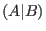
. Our previous definition of
rank was useful but not specific enough. We will strengthen the definition using some nice properties
of bases of vector spaces and linearly independent vectors and by introducing the concept of the dimension
of a vector space. We will start with the Exchange Theorem.
is equal to the rank of the augmented matrix 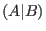
. Our previous definition of
rank was useful but not specific enough. We will strengthen the definition using some nice properties
of bases of vector spaces and linearly independent vectors and by introducing the concept of the dimension
of a vector space. We will start with the Exchange Theorem.
We know that any
is a linear combination of the vectors
 .
Therefore, we can immediately state that the collection
.
Therefore, we can immediately state that the collection
 is linearly dependent and that it also spans
is linearly dependent and that it also spans  (this is a result from a problem from the previous section).
From the definition of span and linear dependence, we know there are unique
(this is a result from a problem from the previous section).
From the definition of span and linear dependence, we know there are unique  and a unique
and a unique  , not all zero, such that
, not all zero, such that
All the
This remarkable result leads directly to a proof of the following theorem.
This theorem allows us to make the following definition which allows us to classify certain vector spaces.
So if a basis for a vector space
contained 4 vectors, then we would call
a 4-dimensional
vector space or say that
has four dimensions. The classic example of a vector space that
does not have a basis, as we define it, is
 , the vector space of polynomials of any degree.
It is called infinite dimensional.
, the vector space of polynomials of any degree.
It is called infinite dimensional.
We will now show that for any matrix, the dimension of its row space is equal to the dimension of
its column space. We will redefine the rank of a matrix to be this common dimension and then show
how the rank may be used to characterize all solutions of a system  . However, we have
a bit of work ahead of us before we get there. We begin with a theorem about the dimension of a
subspace of a finite dimensional vector space.
. However, we have
a bit of work ahead of us before we get there. We begin with a theorem about the dimension of a
subspace of a finite dimensional vector space.
The preceding theorem lets us prove the following.
then
which means all
The reader should assure themselves that this theorem allows us to say that we can always extend a set of linearly independent vectors in a finite dimensional vector space into a basis by adding zero or more linearly independent vectors. Some thinking also allows one to see that almost any set of linearly dependent vectors that span a vector space contains a smaller set of linearly independent vectors that span the vector space. (Can you think of the one exception?)
We have two more major theorems to prove before we can start arranging our knowledge in order to define
an algorithm to compute all solutions of a system  and the necessary and sufficient conditions
for solutions to exist. The following theorem establishes an important relationship between the number of columns in
a matrix and the dimension of its column space and the dimension of its null space.
and the necessary and sufficient conditions
for solutions to exist. The following theorem establishes an important relationship between the number of columns in
a matrix and the dimension of its column space and the dimension of its null space.
for some scalars

Since the form a basis for

and then
We have said that  is any vector in
is any vector in
 , so the
, so the  vectors of the form
vectors of the form
 span
span
 . If we can show that these vectors are linearly independent, then they form a basis for
. If we can show that these vectors are linearly independent, then they form a basis for
 .
This will show that
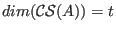
and complete the proof.
.
This will show that
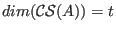
and complete the proof.
Let us suppose that we have 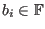 such that

which can be rewritten as
This means that

is in

Subtracting one form from the other gives
But we have seen that is a basis for
We have one more very important theorem with a long, but easy to follow, proof.

As well, each 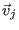 is in so we can write, for
So

Equating entries gives us, with 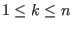 and

We use this to write a system of
| 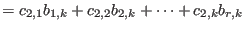 | ||
| 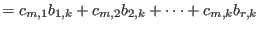 |

Since
We may repeat the same argument using the transpose of
The row space of
Since
We now give a proper definition of the rank of a matrix.
The dimension of the null space of an  matrix
matrix  is often written as
is often written as
 .
We can now rewrite the result of Theorem 5.10 as
.
We can now rewrite the result of Theorem 5.10 as
We now have a wealth of theorems which we can use to explore.
Recall that
 is an 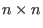
identity matrix. It should now be obvious that the rows
of
is an 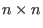
identity matrix. It should now be obvious that the rows
of
 are linearly independent and span the subspace
. Similarly, the columns
of
are linearly independent and span the subspace
. Similarly, the columns
of
 span
span
 . This means that
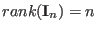
. Obviously
. This means that
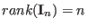
. Obviously
 , which means that the null space of
, which means that the null space of
 is a
zero vector.
is a
zero vector.
We proved that if  is a nonsingular matrix and
exists, then
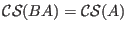
. Immediately we
have that
is a nonsingular matrix and
exists, then
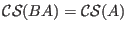
. Immediately we
have that
 . Similarly, if
. Similarly, if  is nonsingular and
is nonsingular and  exists, we can say that
exists, we can say that
 .
So if
.
So if  and
and  exist, then
exist, then
 .
.
We can also see that any  matrix
matrix  is equivalent to a matrix
of the form
is equivalent to a matrix
of the form
where
The next theorem sums up our findings about square matrices. The proof can be obtained by carefully following the results of established theorems.
This next theorem sums up the information we will need to find if a linear system  has a solution.
This is the theorem we will need to (finally) develop an algorithm for finding solutions to
has a solution.
This is the theorem we will need to (finally) develop an algorithm for finding solutions to  ,
if they exist.
,
if they exist.
Please do not confuse the augmented matrix  with the product of two matrices
with the product of two matrices  .
.
Let us now look at a scheme to find solutions of a linear system  where
where  is in
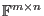
and
is in
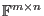
and  is in
is in
 . (This means, of course, that
. (This means, of course, that  is in
is in
 .) We divide
up our scheme into different tasks.
.) We divide
up our scheme into different tasks.
Evaluate 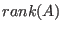
and 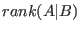
. If they are not equal, then there
are no solutions for this system (see Theorem 5.14).
The easiest way to find out if they are equal is to create
an
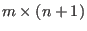
augmented matrix,  , and use row operations to reduce it to reduced row echelon form.
If there is a row of all zeroes except for the column
, and use row operations to reduce it to reduced row echelon form.
If there is a row of all zeroes except for the column  entry, then the ranks are not equal.
The system is inconsistent and
entry, then the ranks are not equal.
The system is inconsistent and
 is not a solution to the system. If the ranks are equal, then
is not a solution to the system. If the ranks are equal, then
 is in
is in
 and is a solution to the system. Furthermore, if
, then
and is a solution to the system. Furthermore, if
, then  is invertible and
is invertible and  is the only solution (recall Theorem 5.13.)
is the only solution (recall Theorem 5.13.)
The following procedure is an extended form of what we did in Task 1.
First, instead of reducing  , we will reduce
where
, we will reduce
where  is
an
is
an  matrix such that
matrix such that  is zero except for its diagonal entries, which
are
is zero except for its diagonal entries, which
are
 .
This is easy to do with Lamp. Then use row operations to reduce
to reduced row echelon form.
If there any rows with only zero entries except in the column entries with indices
, then
the system is inconsistent. This is the same information we had before, but now we have the bonus
of being able to say why it is inconsistent and for what values of
.
This is easy to do with Lamp. Then use row operations to reduce
to reduced row echelon form.
If there any rows with only zero entries except in the column entries with indices
, then
the system is inconsistent. This is the same information we had before, but now we have the bonus
of being able to say why it is inconsistent and for what values of  it can be made consistent.
it can be made consistent.
For example, let us examine the system
| |
||
| |

Each column of

The only way that this system can be consistent is if the bottom row is all zero so that
For example, if
, and
and  , then the system
, then the system
| |
||
| |
using the equations obtained from our previous row reduction, that is
| |
||
If
 , then this is a solution. It is called the trivial solution.
We are interested in finding
, then this is a solution. It is called the trivial solution.
We are interested in finding  when
. We have already seen one method using parameters. We
will show an alternate method.
We have to find a basis for
when
. We have already seen one method using parameters. We
will show an alternate method.
We have to find a basis for
 .
We begin by adding an identity matrix to the bottom of
.
We begin by adding an identity matrix to the bottom of  to get the augmented matrix
to get the augmented matrix
and then use column operations to reduce the augmented matrix to reduced column echelon form . A matrix

The two columns of the bottom portion of the reduced, augmented matrix which do not correspond to leading entries in the top portion are two independent vectors which span

Note: We could just have easily started with the reduced row echelon form of  which
we calculated in Task 2 as the top
matrix in our augmented matrix. (Why?)
which
we calculated in Task 2 as the top
matrix in our augmented matrix. (Why?)
We begin by adding an identity matrix and a column of zeros to the bottom of  to get the augmented matrix
to get the augmented matrix

and then follow the procedure outlined in Task 1 to determine if a solution is possible. If , then there is only one solution, which we can read off directly from the reduced row echelon equivalent matrix we obtained from
With this basis and one particular solution, we can then define all solutions.
For our example we have
 and
and

which we can row and column reduce to

Letting

for any
Notice that this is the same solution as the one we found using parameters in Task 2.

for . Show that the set containing the vectors